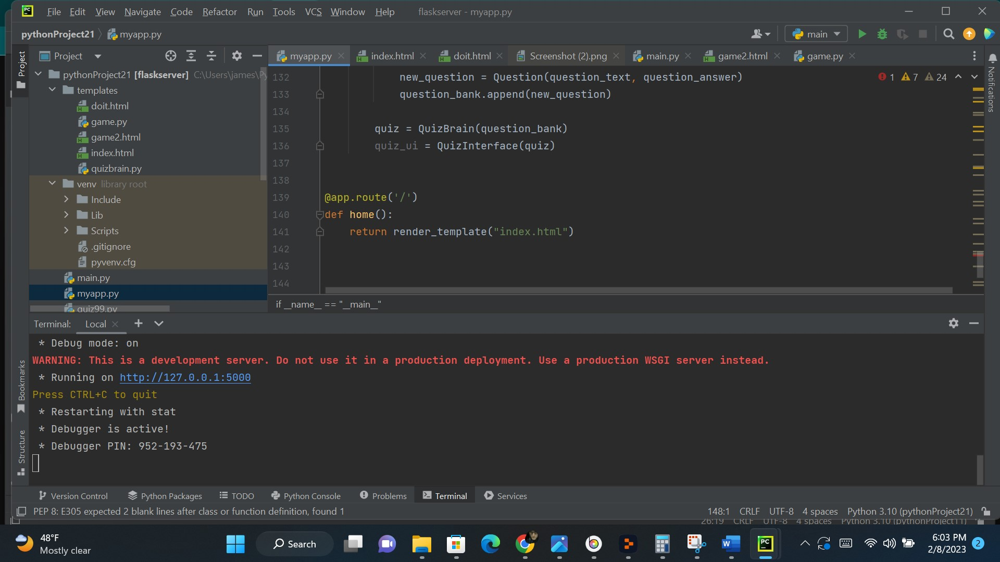

I use frameworks with Python which allow me to have a platform to develop software applications. These frameworks contain libraries, tools, and coding rules. Frameworks are excellent at expediting the development process. They provide template for creating, with security features and testing tools.
Some examples of Python frameworks that I have used are Django and Flask. Flask has great flexibility allowing me to make excellent smaller projects and decide which preferred libraries to use. Django is excellent for larger projects allowing me to quickly move from concept to completion.